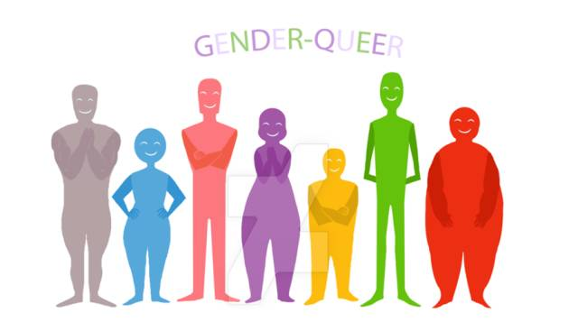

冒刺全书 | “性别酷儿”长什么样？
原创：
瓜瓜
酷儿论坛
2017-01-08
酷儿论坛

motss2002
杭州酷儿论坛（motss.info）致力于为杭州及周边地区学生性少数人群提供一个多元、健康、平等的环境，促进自我认同和社会认可。

 Keeping Your Head Up
Birdy - Keeping Your Head Up
Keeping Your Head Up
Birdy - Keeping Your Head Up

*配合BGM阅读效果更佳哦*

本周瓜瓜和TA的130个小伙伴们看见收到的后台留言中有这么一条：
瓜瓜你好。我有一个朋友，TA生理性别为女，并且对自己与生俱来的生理性别享受其中（化妆以及穿可爱的衣服，男性对TA更具有性吸引力）。但TA昨天告诉我，TA是泛性恋（我理解性取向与性别认同的区别），同时是non-binary gender（非二元性别）；我便对此感到很困惑：因为一般的queer似乎是对自己的生理性别感到疑惑，但TA却是对社会设定的生理女性应该扮演的角色感到不爽而已，这种情况应该被上升到queer的层面吗？TA在美国一所环境特殊的女校，周围大多数人是queer，所以我甚至不怀好意地揣测TA只是跟风……期待瓜瓜的回答。
本来瓜瓜想要直接回复这位小伙伴
但是
……
orz
这时瓜瓜又意识到，Queer这个性别对于大家好像都非常陌生，这不正好是一个拿出来和大家一起讨论一下的好机会吗，于是这篇小科普就这么诞生啦！要是大家对于Queer有什么自己的认识，不妨在留言区说说自己的看法或者是自己和Queer的故事吧~

那么现在就让瓜瓜来解答一下这位小伙伴的问题吧：
①Queer并不是对生理性别感到困惑的性别哦。与这种情况相对应的是Questioning（对性别认同/性取向等感到困惑的人），和Queer有所不同。
②严格来说，Queer（酷儿）也不是一种“性别”。它作为单词时，一般是泛指所有区别于传统性/别观的性少数人群（就好比酷儿论坛的名字，Queer事实上包括了LGBT+）。
③问题中提到的这位生理女性的性别（Non-binary Gender），我们一般用Gender Queer（性别酷儿）来称呼。这是对不接受性别的传统二元划分的人群的称呼，表现之一便是对社会在性别上的一些刻板印象和规训持怀疑否定态度。
“根据描述来看，TA不就是一位女泛性恋者吗
怎么就成‘性别酷儿’了呢？”
不知道大家还记不记得论坛志愿者文文翻译的“性别姜饼人”一图呢？
· 性别姜饼人
由图所示，一个人的性/别属性由：(1)生理性别；(2)性别认同（社会性别）；(3)性别表达；(4)性取向（受传统两性性吸引程度，分为生理吸引与心理吸引）这四个维度决定。它们是四根坐标轴，构建出一个四维空间，勾勒出一个具有完整性/别属性的人。说得简单一点就是，这四个属性是没有必然联系的。
大家试试把四个维度和题设中的TA 联系起来，就会发现TA完全可以是一位生理女性，自我认同为性别酷儿，性别表达接近传统二元性别观女性的泛性恋者。TA的性别认同和其他三个属性没有必然联系。
（值得注意的是，“性/别姜饼人”作为一种产生已有年头的性别分析理论，是存在一定局限性的，比如对某些光谱的划分不够全面而难以诠释泛性恋、无性恋等。）
在自由的氛围中，更多的性少数会敢于表露自己的性取向和性别认同。是否“跟风”，也不是一个非常重要的问题：尊重任何人探索自我可能性的权利和选择，不必过分关注原因。大多数人不也是“跟风”地进行着”性别表演“吗？归根结底，性别认同，是一个个人化的过程，不管一个人何时因什么原因自我认同为何，我们都应该像尊重任何人一样尊重TA。
“道理我都懂，不过‘性别酷儿’到底长什么样？
有什么区别于非性别酷儿人群的特征吗？”
在特地咨询了几位性别酷儿的朋友后，让瓜瓜来和大家分享一下吧。
假设我的生理性别为女性，而只有女性对我具有性吸引力，在“性别酷儿”这个概念不够普及的情况下，我可能会自称为一名女同性恋者，但这并不妨碍我自我认同为性别酷儿。
在谈到这个问题的时候，酷儿论坛的志愿者稻子这么说道：
就我个人而言，更多时候我乐意穿男装、剃平头——大概吧。但在其他方面，我不愿严守刻板印象，可能同时表现出阳刚与阴柔的气质，像是一具男性的身体里寄宿着一颗来自外星球的不羁灵魂；这大概就与我的自我认同相关了……我对这一认同感到自豪，甚至想再说一遍：我的自我认同为性别酷儿——因我反感非女即男的传统二元刻板性别划分和所谓“性别气质”的界定，所以我自认为并不特别地属于哪一种，我更像是一个独立于传统男女两性之外的存在，像是性/别光谱中的一个精灵。
"Keep your head up."
说到这里，瓜瓜突然觉得，“性别酷儿的特征”是难以或是没有必要被描述的。这一概念的存在本身便象征着解构主义，它使我勇于打破传统与规训，也使我勇于反对无处不在的标签化。我们不一定要成为什么样子才能定义自己。这就是为什么题设中的TA身为性别酷儿，却可能没有任何非常特立独行的特征。
每一个立体的人，无关性别，无关性向，都充满了无限的可能——也许这正是酷儿理论几十年来一直所要告诫我们的东西。
不知道我们的这篇推文有没有解决这位小伙伴的问题呢~最后，要是大家对于Queer有什么自己的认识，不妨在留言区说说自己的看法或者是自己和Queer的故事吧~
阅读
微信扫一扫
关注该公众号
关注该公众号
使用小程序